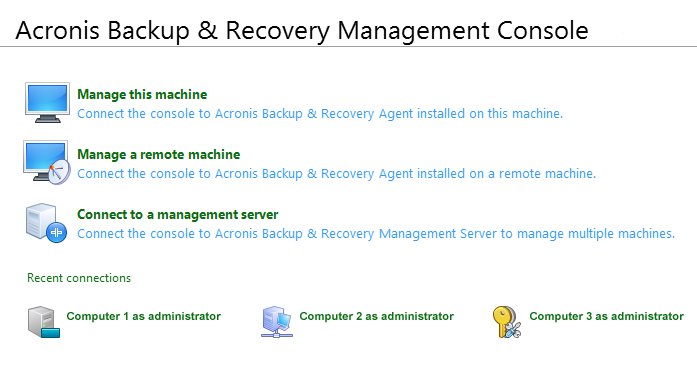
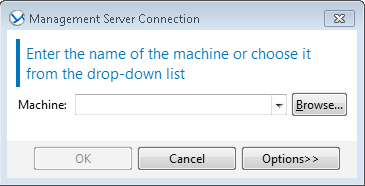
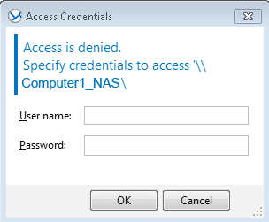

How To – Start Acronis Backup and Recovery Advanced Workstation with Universal Restore from Windows
This How To provides the steps required to start Acronis Backup and Recovery Advanced Workstation with Universal Restore from a Windows based computer.
To start Acronis Backup and Recovery Advanced Workstation with Universal Restore
- Double-click the Acronis icon located on the desktop of the proDAS Management GUI Computer.
The Acronis Backup and Recovery application starts.
- From the Acronis Backup and Recovery Management Console, select Connect to a management server.

- In the Management Server Connection window, enter the proDAS Management GUI PC name in the Machine field.

- Click OK.
- In the Access Credentials window, login as Administrator and enter a password for the Administrator’s account.

- Click OK.